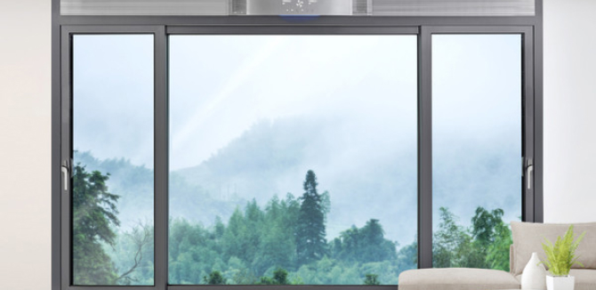
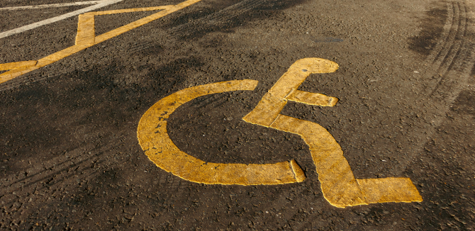
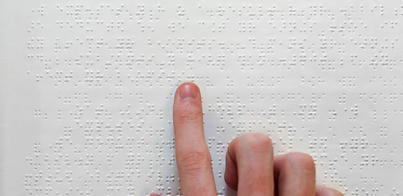
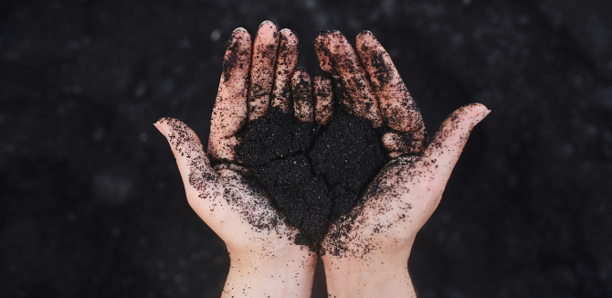
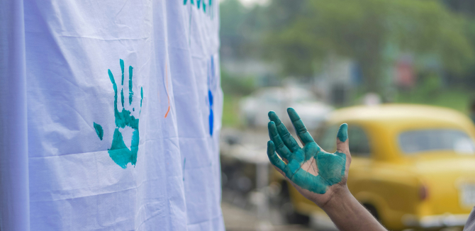

home > ESG경영 > 사회공헌
사회공헌
더불어 살아가는 세상을 위한 상생의
사회공헌에 앞장서는 기업이 되겠습니다
사회공헌 소개
금호석유화학 임직원은 형식적 활동, 현물 전달 위주에서 벗어나참여형의 진정성 있는 봉사를 추구합니다.
-
- 사회복지시설 휴그린 창호지원
- 친환경 건축자재 브랜드 ‘휴그린’ 제품을 활용하여 2008년부터 장애인생활시설을 대상으로 창호시공 및 시설보강 공사를 지원하고, 시설의 열악한 주거환경을 개선하기 위해 노력해 왔습니다. 
-
- 중증장애인을 위한 맞춤형 보장구 지원
- 매년 서울특별시장애인복지시설협회로부터 추천받은 장애인시설을 대상으로 중증장애인 개개인의 체형에 맞는 맞춤형 이너 휠체어 등의 보장구를 지원하고, 장애인들의 일상생활에 도움을 주기 위해 노력하고 있습니다 
-
- 시각장애인용 보장구 지원
- 시각장애인에게 없어서는 안될 필수품인 흰지팡이를 매년 전국 1,000여명 이상의 시각장애인들에게 보급해 오고 있으며, 이와 함께 점자유도블록, 점자판 등을 함께 제작하여 전국의 맹인 학교 및 관련시설에 전달하고 있습니다 
-
- 임직원 끝전/정액 모금 및 매칭 그랜트 성금 기부
- 임직원 급여의 천원 미만 끝전과 일정 금액의 정액 기부금을 모아 매칭 그랜트(Matching Grant)를 실시하여 소외된 이웃을 위한 성금으로 전달하고 있습니다. 
-
- 자율형 임직원 봉사활동
- 봉사활동에 대한 지원과 체계적인 관리를 통하여 독거노인 도시락 배달, 독거노인 이동목욕 봉사, 장애인 외출 프로그램 지원, 노숙자 및 독거노인 무료급식 지원, 영아일시보호소 아기돌봄이 활동, 사랑의 연탄 배달 등 다양한 봉사활동에 임직원 전원이 자발적으로 참여하고 있습니다. 